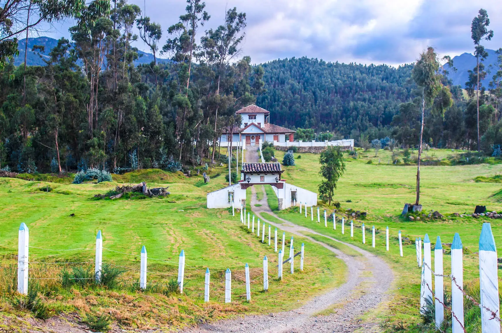

Descubre Cundinamarca
Cundinamarca es el corazón de Colombia, con Bogotá como su capital y múltiples destinos turísticos llenos de historia, cultura y naturaleza. Entre sus atractivos se destacan la Catedral de Sal de Zipaquirá, la laguna de Guatavita, los pueblos coloniales y los paisajes de montaña que rodean la sabana.
En A&G TOURS ofrecemos transporte especial y turístico para recorrer Cundinamarca de manera segura y cómoda. Facilitamos visitas a parques naturales, destinos religiosos y culturales, así como traslados empresariales en la capital del país.
Nuestro compromiso es brindar un turismo en Cundinamarca que combine historia, modernidad y experiencias únicas, con la puntualidad y calidad que nos caracteriza.
Haciendas y Patrimonio
En Cundinamarca se encuentran joyas arquitectónicas como las antiguas haciendas coloniales, que conservan la tradición agrícola, la arquitectura republicana y el encanto histórico de la región. Estos lugares permiten conocer más sobre la vida rural, la cultura campesina y el legado histórico que aún permanece en medio de la naturaleza.
La Chorrera, Maravilla Natural
A pocos kilómetros de Bogotá se encuentra la Cascada La Chorrera, la más alta de Colombia con 590 metros de caída. Rodeada de montañas y bosques nublados, este destino es ideal para los amantes del ecoturismo, el senderismo y la aventura en contacto directo con la naturaleza.
¡Contáctanos!